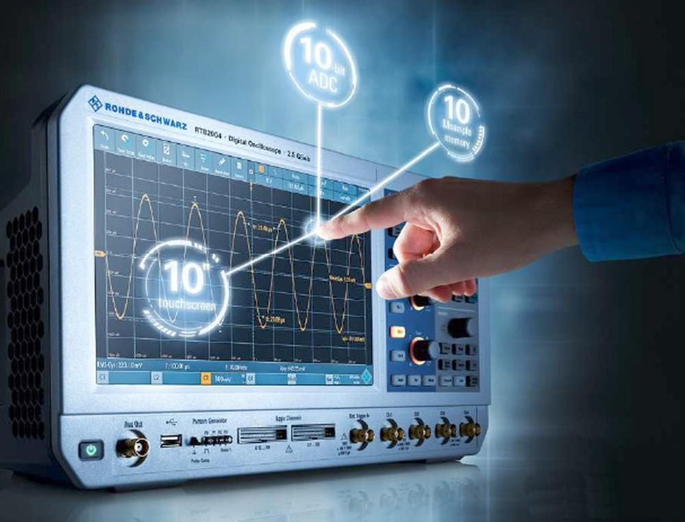

|  |
Méréstechnika (GEVEE509B) tárgy ütemterve a nappali tagozatos BSc hallgatók részére |
|
| Hét | Előadás | Gyakorlat |
| 1.hét | Balesetvédelmi oktatás | Jelgenerálás |
| 2.hét | Analóg és digitális műszerekről a legfontosabb tudnivalók áttekintése | Csoportosított adatok feldolgozása |
| 3.hét | Elektronikai alapok megismerése | Regresszió analízis |
| 4.hét | Feszültség és árammérés eszközei | 1. Egyéni feladat |
| 5.hét | A normális eloszlás sűrűségfüggvénye | Számítógépes mérésadatgyűjtő kártyával mintavételezés |
| 6.hét | Véletlen hibák becslésének módszerei | Mintavételezett adatok feldolgozása |
| 7.hét | Nem villamos mennyiségek villamos mérése | 2. Egyéni feladat |
| 8.hét | Számítógépes mérőrendszerek alapjai, és felépítése | Hiba és szélsőérték figyelés |
| 9.hét | Jelkondicionálók, D/A és A/D átalakítók | szünet |
| 10.hét | Számítógépbe helyezhető adatgyűjtő kártyák jellemzői és alkalmazási lehetőségei | Számítógépes mérésadatgyűjtés adatgyűjtő kártya analóg kimenetének használata |
| 11.hét | Az előadás anyaghoz kapcsolódó számolási példák megoldása | 3. Egyéni feladat |
| 12.hét | ZÁRTHELYI DOLGOZAT írása | szünet |
| 13.hét | pót ZH írása | szünet |
| 14.hét | Pótlások | Pótmérés |